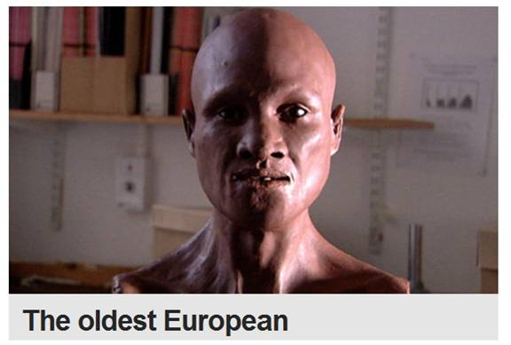

|
Back to Homepage
III. The migration routes and distribution of modern man can be seen through DNA decoding
1. The Genographic Project
The Genographic Project which was started in 2005 and the major research item were to collect DNA samples from 100,000 people from different ethnic groups. After analysis of their Y chromosomes and mitochondrial genetic markers to establish a common database of mankind’s hereditary markers, thereby constructing the paternal tree lineage and maternal tree lineage of the entire human race. From this database one can refine mankind’s entire family history, the migration history as well as the ethnic distribution map.
The Genographic Project has nothing to do with projects related to gene and geography for its purpose is not to investigate human genes and their geographical distribution. Instead, it is to study the inheritance of male and female lineage and their geographic distribution. The male inheritance lineage comes for the Y chromosome genetic markers and the female inheritance lineage comes from the mitochondrial genetic markers. A more precise name for the Genographic Project should be “A project to study the geographical distribution of genetic markers”.
In addition to the initial 100,000 participants, the Genographic Project is also open to the public. More than 390,000 people were part of this research project by purchasing kits and submitted their DNA samples individually for analysis in order to determine their own hereditary lineage. Their results were then published anonymously online. Armed with these data plus over a million data from other organizations, we finally has a clearer understanding of our own past history hidden in our blood stream.
2. Modern man outside of Africa
In the previous parts, we focus on mankind’s paternal and maternal lineage trees all related to mankind’s blood relationships. In this part and the following two parts, we will discuss mankind’s lineage and its geographical distribution in the world.
The development of the Genographic Project is inseparable from the research results conducted at Stanford University (Please see Part 2). Molecular anthropologist, Dr. Spencer Wells, was a leader as well as a team member of the Genographic Project. Fully committed to this project, Dr. Wells courageously went around the world to film many TV series which are worth viewing.
The results from the “Genographic Project” further confirmed the results form the aforementioned research team. The collection and analyses of tens of thousands of Y chromosome samples not only confirmed but enriched the Y chromosome paternal tree they have constructed. On top of DNA genetic markers analyses no only confirmed that every person on earth shares a common paternal and maternal ancestors but also there are only a handful of descendants from them who lasted until the present time. Another amazing fact is this: all modern males outside of Africa share a common male genetic marker M168. Moreover, both males and females share a common female genetic marker L3.
What this means is that a long time ago in the body of a male mutational change created the M168 genetic marker. This person with the first M168 genetic marker was the paternal ancestor of modern man outside of Africa. Similarly, there was a female first to carry the L3 genetic marker who was the maternal ancestor of all modern humans outside of Africa. Even though it is unlikely that these two were husband and wife at the same period of time, nonetheless, this does not change the fact that they were the common ancestors of the present 6 billion people on earth outside of Africa. There are many different branches including us after them. Please refer to Part 2, Figure 2-5 The Paternal genetic tree and Figure 2-11 The Mitochondrial lineage tree.
3. Those who remain in Africa
The hometown of mankind is Africa. The genetic markers in modern Africans are not as simple as those who migrated outside of Africa. From the DNA samples collected in Africa by the Genographic Project, there are very few individuals who carry the M168 and L3. Most Africans do not have the M168 and L3 genetic markers. However, they have other genetic markers not found in those who live outside of Africa.
M60 and M91 are the major genetic markers found in the Y chromosomes of Africans.
In the various African tribes and African countries, those with a larger percentage of M60 are listed belo>Gabon, Cameroon and the Central African Republic Baka people (Baka): 63% -72%;
Tanzania's Hadza people (Hadzabe): 52% -60%;
South Sudan Nuer (Nuer): 50%.
Congo (gold) of the Mbuti people (Mbuti): 33% -60%.
[Baka 63% -72% (Gabon, Cameroon, CAR), Hadzabe (Tanzania) 52% -60%,
Nuer (South Sudan) 50%, Mbuti (DRC) 33% -60%].

Figure 5-15 Reconstructed bust of the ancient modern European from 34,000 years ago
When we compare the reconstructed bust of the ancient modern man from Romania 34,000 years ago with the reconstructed bust of the Omo ancient modern man, we could hardly find any difference. The difference between these two ancient modern men is no greater than the difference between two individuals living today. A lapse of 160,000 years fails to leave any trace of “evolution” in these two ancient modern men. People who hold the view that those people who left Africa must resembled “apes” firmly believe the “ gradual evolution during migration” hypothesis. This belief is pure imagination lacking in hard evidence.
Reference |